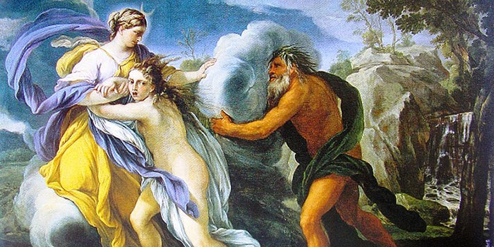
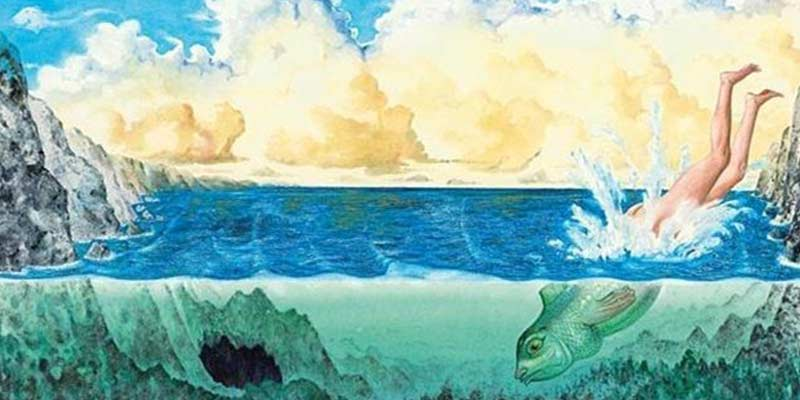

Miti e leggende di Sicilia
Scopri le affascinanti storie della meravigliosa isola siciliana!
Il progetto
L’obiettivo principale del progetto ‘Miti e leggende di Sicilia’ è quello di raccogliere il maggior numero di storie mitologiche e leggendarie della Sicilia in un’unica collezione digitale, con l’accompagnamento di immagini e talvolta video musicali.In evidenza
Aretusa e Alfeo

Aretusa era una ninfa al seguito di Diana. Durante una battuta di caccia, la fanciulla si allontanò troppo dal gruppo e arrivò sola davanti alle sponde del fiume Alfeo, le cui acque erano così limpide che si poteva scorgere la ghiaia sul fondo. Era una giornata calda e le venne il desiderio di bagnarsi: intorno a lei un silenzio singolare, interrotto solo dai suoni armoniosi della natura…
Le donne di fuora

In bilico tra favola e stregoneria, la storia dei curtigghi si intreccia alla leggenda delle donne di fuora, donne del mistero rappresentate a volte come fate, altre come streghe, che si dice abbiano un rapporto privilegiato con gli spiriti e con le forze della natura. Esse sono chiamate anche donne di notti (Caltanissetta), dunnuzze di locu (Sambuca di Sicilia), patruni di casa...
Colapesce

La leggenda di Colapesce narra di Nicola, detto Cola, figlio di un semplice pescatore che viveva a Messina. Cola era un vero amante del mare, tanto da passare le sue giornate a nuotare, come un pesce. Non a caso venne soprannominato Colapesce. Le sue spiccate capacità nel nuoto, lo spingevano a esplorare le meraviglie del mare, per poter trovare tesori da portare sulla terraferma...